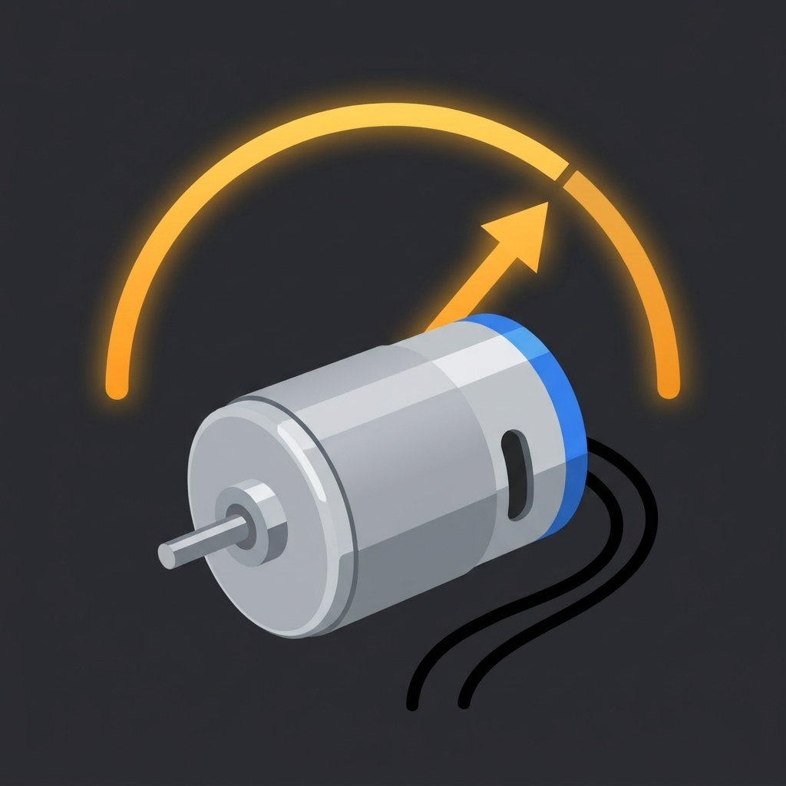

模型用の小型ブラシモーター（130・540サイズ）の駆動音を iPhone のマイクで拾い、その周波数から無負荷回転数（rpm）を算出する音響式の回転数計です。専用の回転計を用意しなくても、慣らし（ブレークイン）や選別のたびに回転数を確かめ、モーターごとに記録して比べられます。
解析した回転数は、安定すると数字がロックして動かなくなります。ロックした値の最大（MAX）は針で残るので、一番回る個体がひと目でわかります。音響方式のため数値は目安です。無負荷時の測定専用で、慣らし前後や個体間の相対比較にお使いください。
ライブ回転数・ロック・MAX、スロット係数（3 / 5 / カスタム）、手持ちの回転計の値で合わせる較正、電圧の記録、モーター台帳3本までとその範囲での比較、結果の共有画像は無料でお使いいただけます。台帳4本目以降（無制限）、電圧補正（3.0V換算）での比較、慣らしの推移グラフと伸び率、CSV書き出し、ギア比・タイヤ径からの理論最高速（無負荷・目安）はPro（¥800・買い切り）で解放されます。サブスクリプションではなく、一度のお支払いで恒久的にご利用いただけます。
ご質問・ご要望・不具合報告は、お問い合わせフォームよりお寄せください。
MotorTacho listens to the driving sound of small brushed hobby motors (130 / 540 size) through the iPhone's microphone and calculates the unloaded RPM (rotations per minute) from its frequency. No dedicated tachometer needed — check the RPM every time you break in or sort motors, log it per motor, and compare motors side by side.
When the reading settles, the number locks in place instead of drifting. Free: live RPM, lock, MAX hold, slot-count setting, calibration against a reference tachometer you already own, voltage logging, a 3-motor log with comparison, and a shareable result card. Pro (¥800, one-time — not a subscription) unlocks an unlimited motor log, voltage-normalized comparison, a break-in progress graph with % gain, CSV export, and an estimated top speed (unloaded, for reference only) from gear ratio and tire size.
MotorTacho estimates RPM acoustically — it's a reference figure, not a substitute for a calibrated instrument. It measures unloaded RPM only. Use it for relative comparisons: before/after break-in, or motor-to-motor.
The app interface is Japanese only.
The app collects no personal data; measurement and records stay on the device (no network communication apart from in-app purchase and the external links you open). See the Privacy Policy.